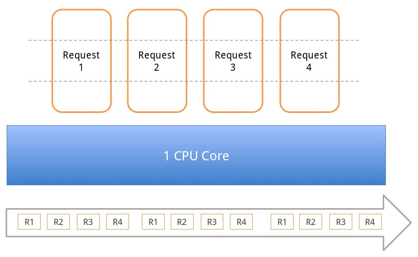
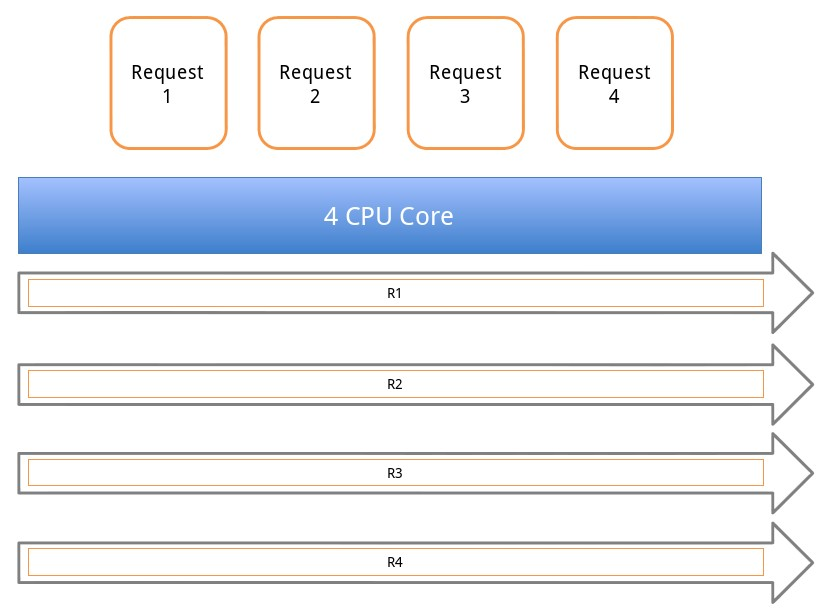
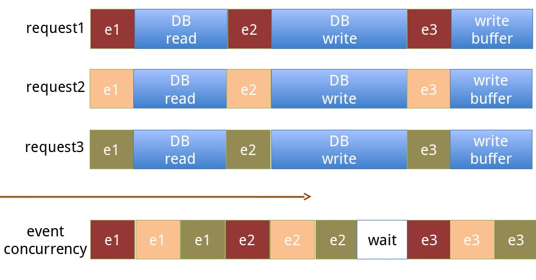
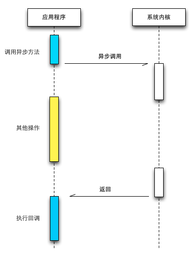
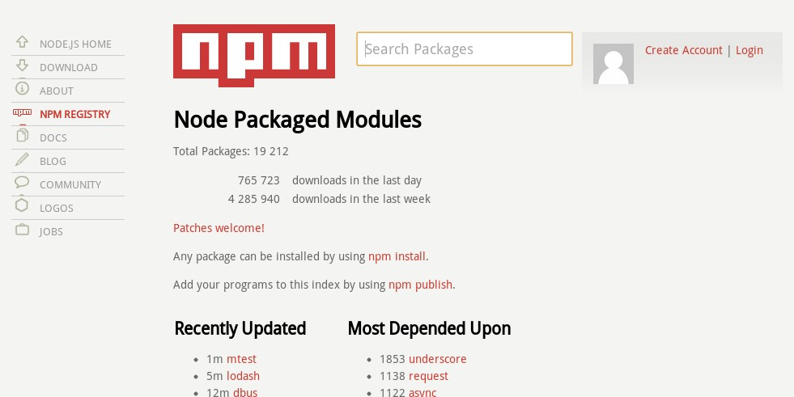
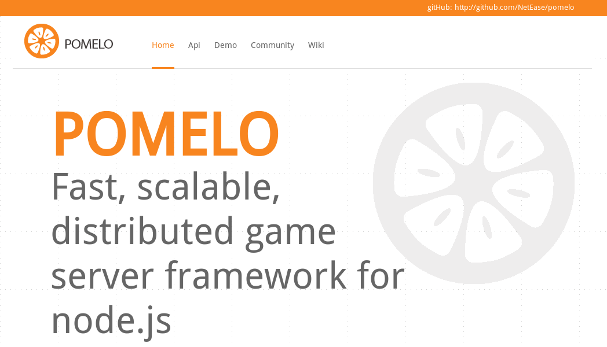
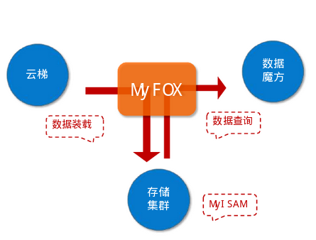

什么是Node.js
- 一个JavaScirpt的服务器端运行时，基于V8引擎
- 并非第一个JavaScript服务器端运行时（Netscape的LiveWire）
- 亦非唯一一个JavaScript服务器端运行时（基于Mozilla Rhino的RingoJS）
- 实现了CommonJS规范
- 系统API，I/O，网络...
- JavaScript - DOM - BOM = ECMAScript
- ECMAScript + Package + ... = CommonJS
Node.js的发展历程
发展历程
- 2009年02月，Ryan Dahl宣布准备基于V8创建一个轻量级的Web服务器并提供一套类库。
- 2009年05月，Ryan Dahl于GitHub发布了最初版本的Node.js包，随后数月，有人开始使用Node.js开发应用。
- 2009年11月，JSConf大会开始每年都安排Node.js的讲座。
- 2010年年底，云计算服务商Joyent资助Node.js，Ryan Dahl加入Joyent全职负责Node.js的发展。
- 201x年xx月，......
- 2012年10月，Node.js 0.9.3 Version(Unstable)
应用案例
更多中国用户案例

Node.js的特点
事件机制
传统机制之CPU分片

传统机制之多进程并发

同步IO
异步IO

异步回调

借助异步在单线程上突破性能瓶颈
Faster than C!
5000Mbit/s

模块机制
模块使用示例
/* @文件名: Math.js */
module.exports = {
PI: 3.1415
};
/* @文件名: Circle.js */
var Math = require('./Math');
var area = function(r){
return Math.PI * r * r;
};
模块分类
- 核心模块(已编译进二进制执行文件)
- 文件模块(动态加载)
- js格式
- node格式(由C++写)
- json格式
模块加载之包装
(function(exports, require, module, __filename, __dirname){
/* @文件名: Circle.js */
var Math = require('./Math');
var area = function(r){
return Math.PI * r * r;
};
});
模块加载
npmjs.org

应用场景
Real-Time
- 场景特点
- 业务逻辑简单， 功能单一
- 无页面逻辑，维持长连接，push json/xml数据到客户端
- IO并发要求极高，单机需维持上万长连接
- 常用编程语言
- node.js
- Go
Real-Time

Web API Service
- 场景特点
- 业务逻辑比较简单， 功能点较少
- 无页面逻辑，输出json/xml数据
- IO并发要求比较高，上千上万的并发
- 常用编程语言
- Java/.NET
- node.js
- Go
- Python/Ruby
Web API Service

Unix tools
- 场景特点
- 处理文本流
- 标准输入输出，网络支持
- 开发便捷
- 爬虫
- 常用编程语言
- Shell
- Python/Ruby
- Node.js
单一页面应用
- 场景特点
- 通过大量Ajax请求与后端交互
- 后端无需页面逻辑，与前端交互数据类型为json/xml
- IO并发要求比较高，成千上万的并发数
- 常用编程语言
- Java/.NET
- node.js
- Python/Ruby
Node.js的局限及解决
CPU密集型应用
CPU密集型应用
- 起因
- 单线程
- 解决方案
- 将耗时的模块替换成C++(node-gyp)
- Child Process或Cluster worker
- 借助第三库
CPU密集型应用
深度嵌套回调
获取模板->获取数据->进行本地化(同步)
Template template = Template.get('id'); // 获取模板
Data data = Data.get('id'); // 获取数据
data = I10n.convert(data); // 本地化相关工作
return render(template, data); //渲染出最终结果
Template template = Template.get('id'); // 获取模板
Data data = Data.get('id'); // 获取数据
data = I10n.convert(data); // 本地化相关工作
return render(template, data); //渲染出最终结果
深度嵌套回调
获取模板->获取数据->进行本地化(异步)
$.get("template", function(template){
// 获取模板
$.get("data", function(data){
// 获取数据
$.get("l10n", function(l10n){
// 本地化相关工作
render(template, data);//渲染出最终结果
});
});
});
$.get("template", function(template){
// 获取模板
$.get("data", function(data){
// 获取数据
$.get("l10n", function(l10n){
// 本地化相关工作
render(template, data);//渲染出最终结果
});
});
});
深度嵌套回调
- 起因
- 异步
- 解决方案
- 事件监听: 继承EventEmitter
- Promises: node-promise
- 同步: Wind.js, streamline.js
- 纤程或协程: node-fibers, js-coroutine
多核CPU利用率
多核CPU利用率
- 起因
- 单线程
- 解决方案
- Node.js自带Cluster模块
- 开启多个进程，借助Nginx等反向代理负载均衡到各个进程
多核CPU利用率
Node.js的相关框架
Express
Connect
Meteor
Meteor Demo
Users = new Meteor.Collection('users');
if(Meteor.isClient){
Template.inc.events({
'click h1': function(){
var user = {name: 'test'};
Users.insert(user);
}
});
Template.inc.count = function(){
return Users.find().count();
};
}
<body>
{{> inc}}
</body>
<template name="inc">
<h1>Number(Click me):{{count}}<h1>
</template>
Meteor Demo
谢谢
欢迎交流。